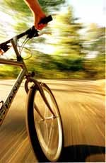

Pedali pedali e ti pare di non andare da nessuna parte. Poi chissacome, un bel giorno smetti di pedalare e per magia ti ritrovi in un mondo sconosciuto tutto da esplorare. Insomma, come una cyclette appena traslocata in una nuova palestra.